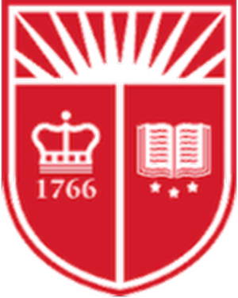

About Me
I am currently a fourth-year undergraduate student studying computer science at Rutgers University. My interests broadly lie within the fields of artificial intelligence and data science. In my spare time, I like to use computation to solve problems in renewable energy.
Education
B.S. in Computer Science (Expected 5/2020)
Rutgers University, New Brunswick, NJ
Experience
National Renewable Energy Labratory, Golden, CO (6/2018 - 8/2018)
Research Intern, Advisor: Dr. Leonardo Micheli
Princeton Plasma Physics Labratory, Princeton, NJ (9/2017 - 1/2018)
Research Intern, Advisor: Dr. Arturo Dominguez